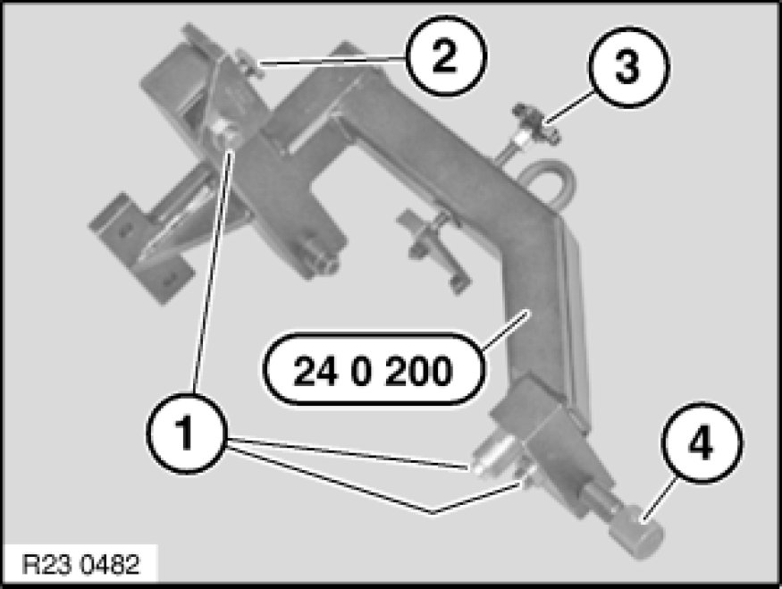

Universal Transmission Retaining Bridge
23 .. ... - Universal transmission retaining bridge

Special tools required:
- 00 1 450
- 24 0 200 24 0 200 Support

Note:
- The transmission retaining bridge 24 0 200 24 0 200 Support is suitable for both manual and automatic transmissions

Important!
Adapters and spindles must be adapted for positive locking to the transmission.
(Risk of injury)

Adapt adapters (1) and spindle with thrust piece (3) to transmission.
Adapt length with slide (2).
Screw in spindle (4).
Important!
Before mounting on assembly stand 00 1 450, check retaining bridge for secure seating.